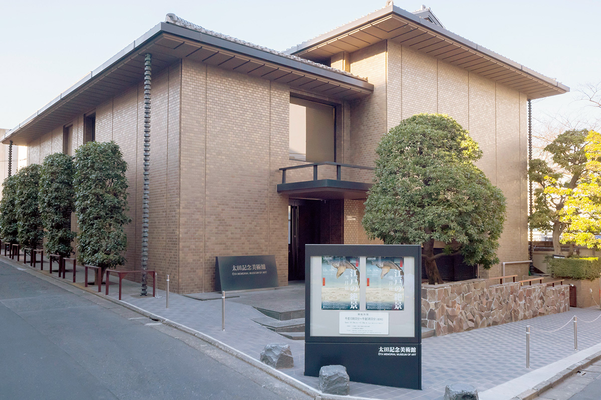
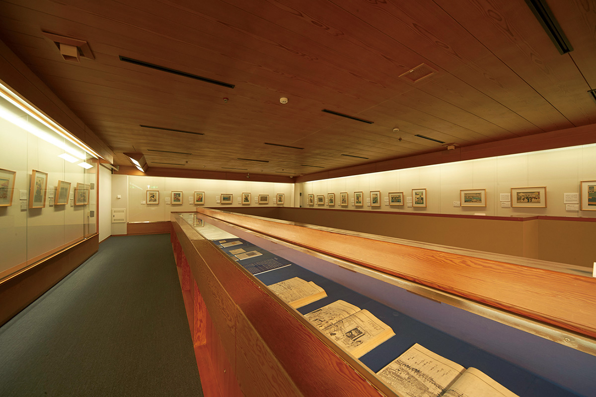
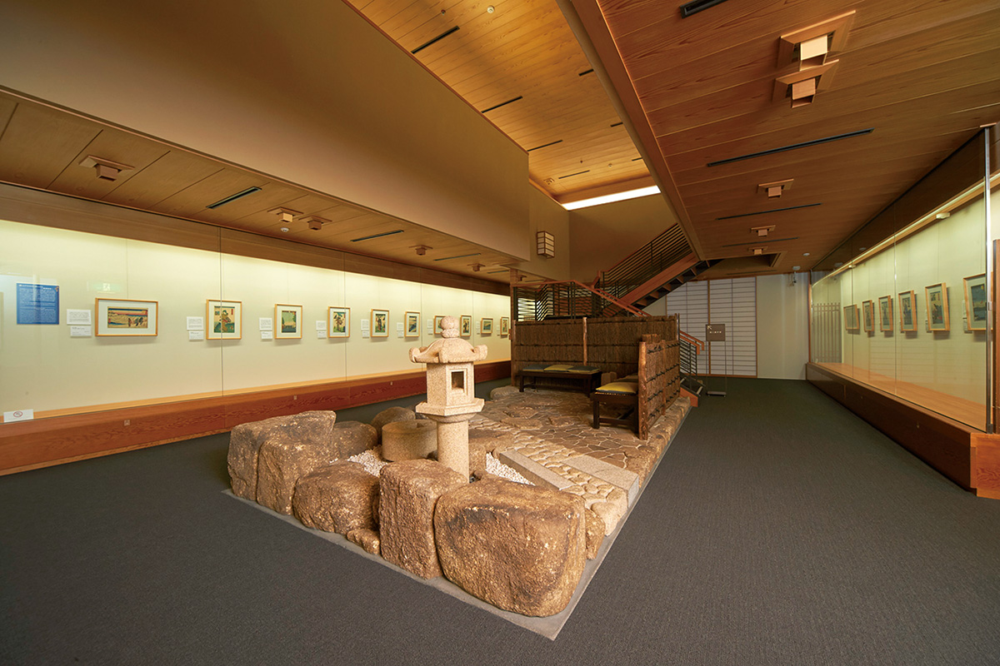
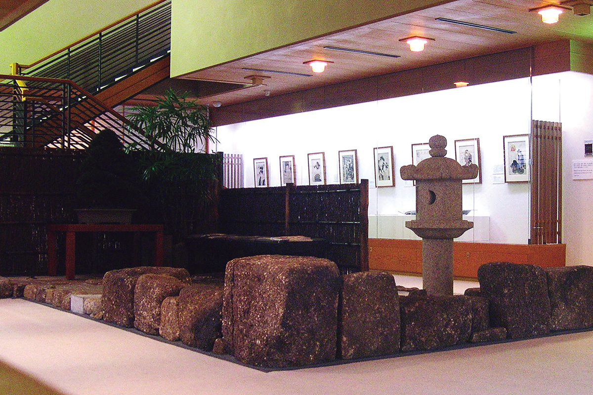

Токио · Харадзюку · музей
Музей Ота в Харадзюку: история укиё-э от первых листов до последних

В выходной день в Токио можно отправиться по музеям: их в городе множество, и в некоторых интересно не только собрание, но и само здание или сад. Музей Ота в Харадзюку целиком посвящён укиё-э, японской гравюре и живописи, которую в эпоху Эдо покупали и любили простые горожане.
История
Коллекция, которая вернула укиё-э домой
Укиё-э выросли в эпоху Эдо как искусство для всех: их покупали горожане, а не знать. Но в конце эпохи огромное число листов уехало за границу, и в самой Японии хорошие работы стало трудно увидеть.
Это огорчало Сэйдзо Ота (1893–1977), пятого президента страховой компании «Тохо Сэймэй». Больше полувека он собирал укиё-э и вкладывал в собрание все силы. После его смерти семья решила, что коллекция должна служить развитию искусства в стране, и открыла музей.

Коллекция
От Утамаро до Хиросигэ
В собрании около 14 000 работ. Здесь есть главные листы самых известных мастеров: Утамаро Китагавы (1753?–1806), прославившегося портретами красавиц, Кацусики Хокусая (1760–1849), самого известного за границей японского художника, и Хиросигэ Утагавы (1797–1858), мастера пейзажей и дорожных видов. Но ценность коллекции в её широте: по ней можно пройти всю историю укиё-э, от рождения жанра до его конца.
Укиё-э держатся на двух видах работ: на гравюрах и на картинах, написанных кистью от руки. Сильных вещей в обоих видах здесь много, и среди частных собраний укиё-э коллекция Ота одна из крупнейших в мире. К тому же все листы сохранились полностью и не потеряли красоты цвета.
Выставки
Каждый месяц новая тема
Сюда приходят не только японские любители гравюры, но и иностранцы, которые интересуются японской культурой. Выставки здесь устроены так: каждый месяц музей выбирает тему и показывает работы, которые ей отвечают. Поэтому в каждый приход укиё-э открываются с новой стороны.


Музей Ота
- Адрес
- Токио, Сибуя, Дзингумаэ, 1-10-10
- Телефон
- +81 50-5541-8600 (справочная служба)
- Часы работы
- 10:30–17:30, вход до 17:00
- Выходные
- понедельник (если это праздник, то следующий день), дни смены экспозиции
- Цены / Вход
- зависит от выставки
- Как добраться
- станция Мэйдзи-дзингумаэ (линия метро Тиёда и другие), 3 минуты пешком
Фото: Масая Ёсимура.